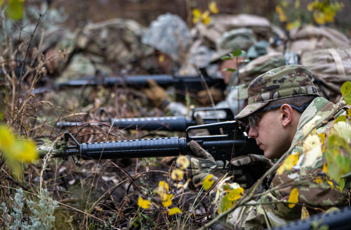
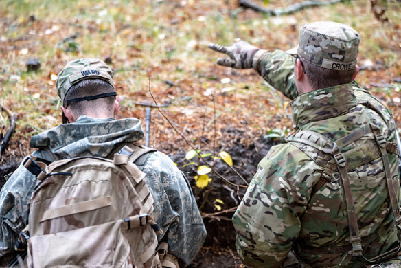
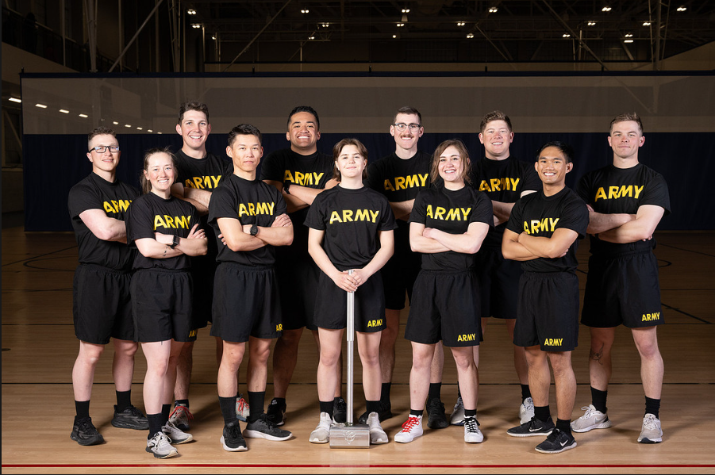
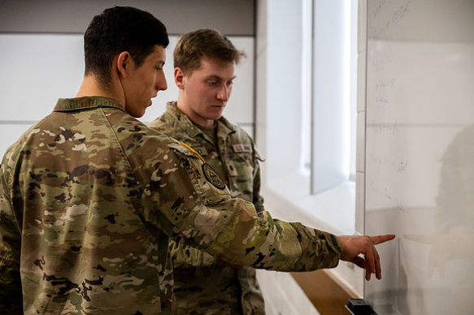
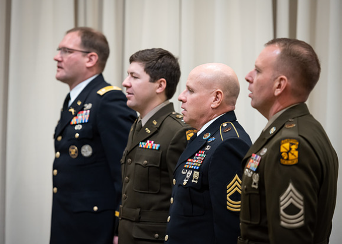

Leadership starts somewhere. For many BYU-Idaho students, it starts with Army ROTC
Most students arrive at BYU-Idaho focused on their major, their classes, and their future careers. Very few realize that they also have the opportunity to train as leaders and prepare to become Army officers while earning their degree. The Army ROTC program allows students to develop leadership skills, build confidence, and challenge themselves both mentally and physically.
Many cadets join the program simply looking for a challenge and discover that they are capable of far more than they expected. ROTC is not just about military training. It is about learning how to lead, how to make decisions under pressure, and how to work as part of a team. These are skills that help students succeed not in the Army but in any career path they choose.
ROTC is designed to build leaders. Cadets participate in leadership labs and exercises where they practice planning missions, solving problems, and leading teams. These experiences help students develop confidence and decision-making skills that are valuable in both military and civilian careers.


ROTC offers scholarship opportunities that can help pay for college tuition and other education expenses. These scholarships reward students who demonstrate strong leadership potential and a commitment to service.
Many cadets say ROTC pushed them outside their comfort zone in the best way possible. Through physical training, leadership challenges, and teamwork, students develop discipline, resilience, and confidence.


Students who complete ROTC and commission as Army officers gain valuable leadership experience and career opportunities after graduation. Officers lead teams, solve complex problems, and make decisions that have real impact.